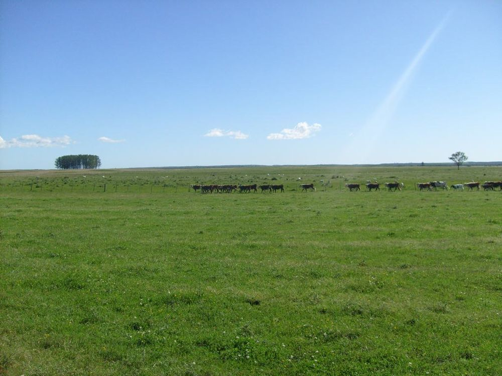
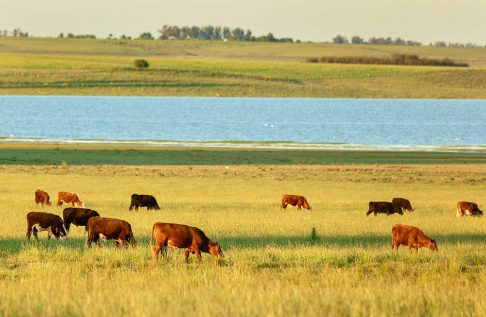
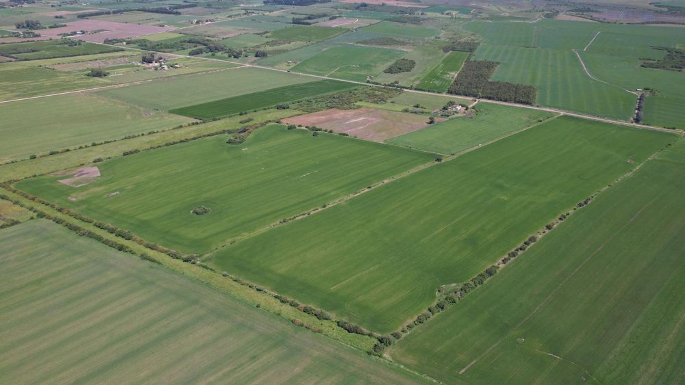
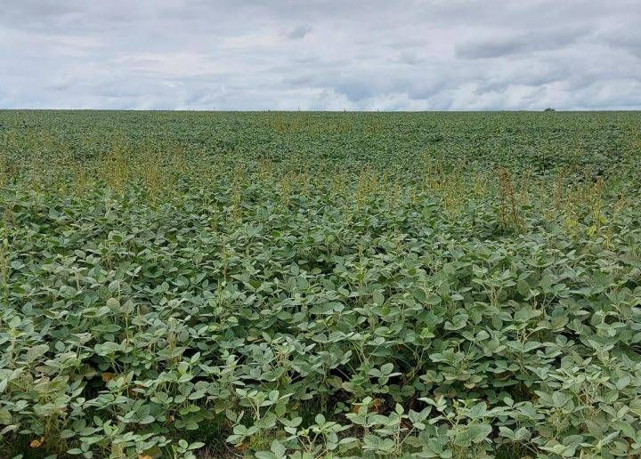
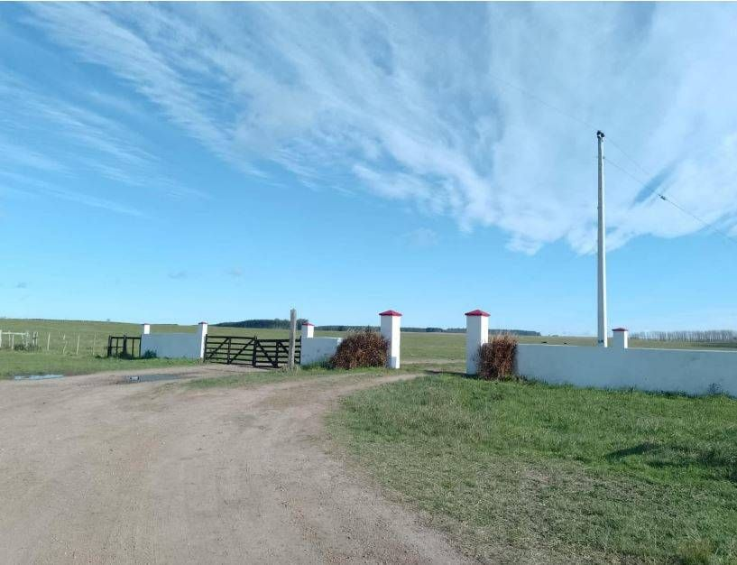
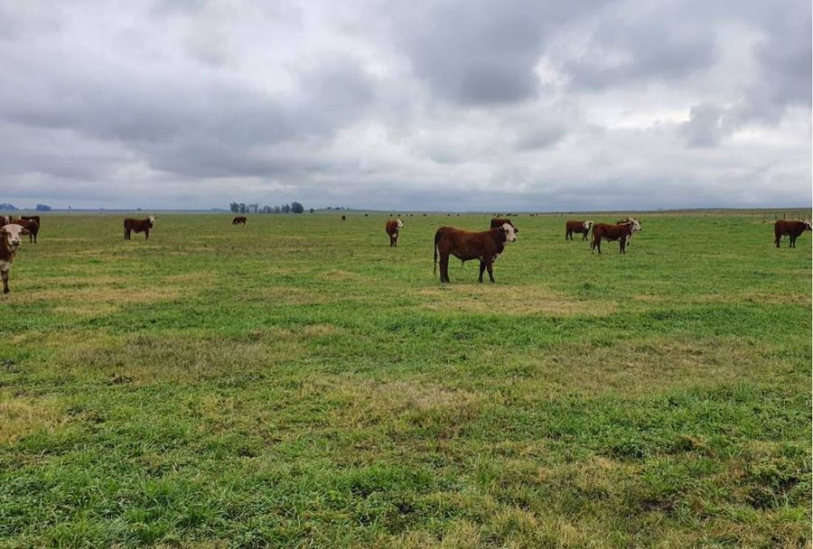
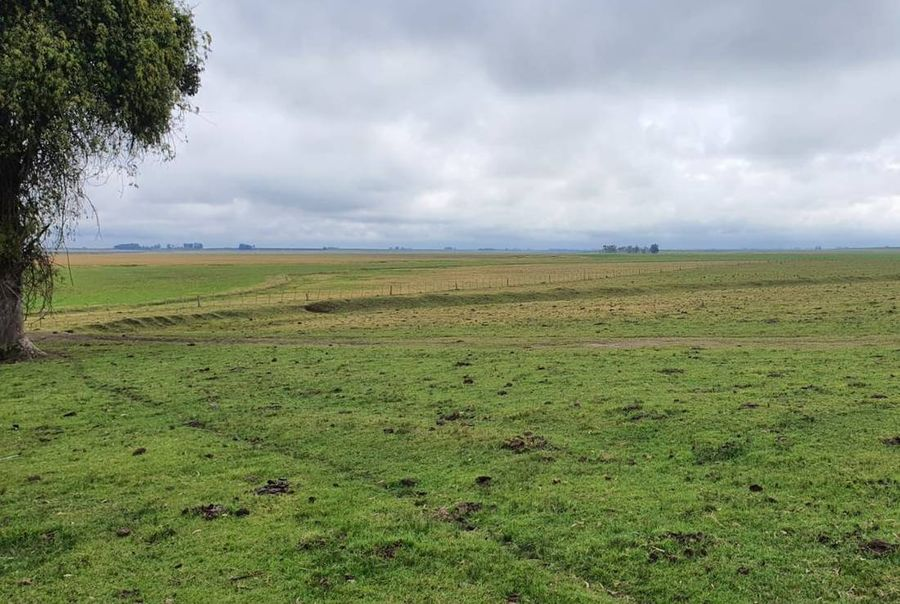
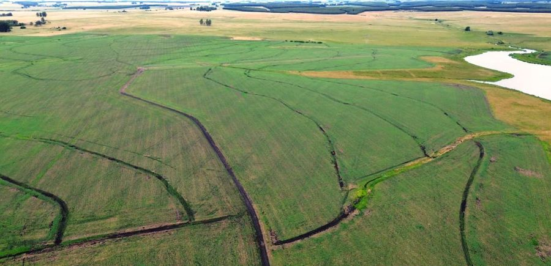

Available

Río Negro · Uruguay
5,700ha
Farmland in Río Negro
ProductionAgriculture · Livestock · Forestry
CONEAT Index86
A selection of available farmland assets in Uruguay and Paraguay. Updated quarterly. All figures in USD.








Interested in a specific field? We respond within 24 hours with a complete property brief.
Contact UsTell us your profile and we will come back with matching fields.